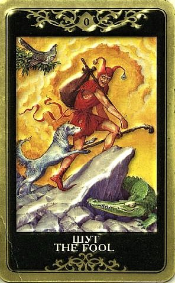

Карта шута означает, что вы идете по дороге, свернуть с которой не удастся — вас ведет по ней судьба.
И надо идти по этому пути, полагаясь на удачу и покровительство Высших сил.
Шут также указывает на то, что человек не владеет ситуацией, а также на неожиданно возникающие ситуации, непредвиденные обстоятельства, недоразумения, которые привязывают к дороге — как ко всякому незнакомому пути.
Шут — символ некритичности восприятия.

Шут всегда предупреждает о чем-то совершенно новом, что готово ворваться в жизнь, отчего в ней возникает хаос, однако как правило ничего опасного в этом нет (за исключением случаев, когда на это прямо указывают другие карты).
Начало нового цикла жизни, любые новые дела, некий радикальный шаг.
Это перекресток жизненных дорог, новый виток развития, чистая нерастраченная энергия. Человек догадывается, что дорога, на которую он вступил, нелегка, на ней есть неприятности и опасности, но что-то все же подсказывает, что они его как-то обойдут и все будет хорошо и пойдет только на пользу.
Вообще присутствие Шута в раскладе всегда очень мощный знак, человек как правило даже представить не может, что он несет. Неожиданный поворот событий, сюрприз. Может произойти что угодно. Карта показывает на обстоятельства неожиданные, не запланированные, которые могут перевернуть наличное состояние дел.
Причем мы вольны избирать любое направление, идти куда угодно, делать что хотим. Это удачная возможность! Такая свобода отнюдь не часто даруется нам в жизни, и Шут как индикатор настоящего – своего рода благословение, сейчас действительно есть какой-то шанс, «чистая страница».
Часто показывает в раскладе конкретную личность (причем вопрошающий обычно легко может догадаться, кто это).
Путешествие.
Шут – это не только «внутренний ребенок», но еще и внутренний герой!
Шут олицетворяет Героя, безрассудно движущегося навстречу своей судьбе. Но именно он получает Мир в конце странствия. Он не использует ни разум, ни иные средства, чтобы осветить свой путь. Но то, что стороннему наблюдателю кажется слепым движением в пропасть, в могилу, на самом деле является путем к преображению, столь далеко выходящему за пределы этого мира, что все умники не могут себе этого представить.
Посвящение, инициация и начало нового пути.
Стадия в духовном развитии, которая символически соответствует началу большого приключения и соответствующему воодушевлению. Период вступления в неизведанное - с веселым удивлением и без каких бы то ни было конкретных ожиданий.
Это одна из карт кармы, ведомости («повинуюсь року»), уранического хождения под Богом. Те, у кого в гороскопе силен Уран, знают, о чем речь. Как известно, доминирование высшей планеты в гороскопе всегда дает слишком напряженный ритм судьбы.
От Шута не веет благополучием в смысле, льстящем Эго. Но от него веет благополучием души, не привязанной к условностям, и пребывающей в свободном странствии, как и должно быть в этом мире (по слову Христа - «будьте прохожими»).
В оккультном смысле Шут воплощает Архетип Души - неприкаянной, безрассудной, по-своему блаженной, голой и нищей и идущей куда глаза глядят (к ужасу разумного и своекорыстного эго). Своего рода возвращение к настоящему духовному здоровью, может, и не выглядящему как социальное благополучие. Шут уранически асоциален. Но зато в пути, как и должно. У него шутовской наряд, «приличные люди» над ним смеются, но он нисколько этого не боится. Он сам посмеется над кем угодно, и облаивание его не смущает.
В принципе Шут способен на все (на то он и джокер), но реализует практически очень мало.
Это божественный гений, способный создать Вселенную и разрушить ее, но... Вселенной еще нет, и поэтому Шут - это только ноль, ничто, абсолютная пустота, которая может стать всем чем угодно, и абсолютная свобода этого становления: в этом ничто, в потенциале, содержится все. Уран говорит о том, что Бог творит Вселенную легко, случайно и не нарочно, - и такова же спонтанная Природа человеческой гениальности.
Чаще всего Шут изображается держащим за плечами на палке узелок и балансирующим с ним (узелком) на краю пропасти. В этом узелке - есть то "все" и "ничего", заставившее Шут отправиться в путь. По идее, там находится объединенный жизненный опыт всего человечества, соотносящийся с коллективным бессознательным.
Стародавние толкования считают карту страшной: "Символ слепца, обратившего себя в рабство материи. Его котомка переполнена его заблуждениями и бессмысленными поступками. Разбитый обелиск - гибель его дел. Крокодил (в картах Папюса вместо собаки изображается крокодил) - эмблема неумолимой фатальности и... неизбежного искупления и расплаты за содеянное, так как ничего в жизни не делается "просто так" - и за все надо платить". Между прочим, здесь уместна еще одна ссылка на астрологию и Уран, планету неукротимой демиургии, сотворения (согласно мифу, Сатурну пришлось отхватить своим серпом папе-Урану то, чем творят, чтобы в мире наконец прекратился хаос и воцарилась хоть какая-то стабильность). Уран управляет Водолеем. Мы живем в эпоху Водолея, в очень «ураническое» время и адаптированы к проявлениям Урана и Шута куда лучше, чем наши предки, жившие в более предсказуемые и плотные времена. Поэтому и толкования по сравнению со старинными сменились на более позитивные и творческие. И пусть творение есть нарушение изначального порядка бытия - и потому перед Шутом пропасть, - но все же оно диктуется высшими законами.
В оккультном смысле нулевая карта Шут уподоблена материальной Вселенной. Но она, подобно смертному человеческому телу, есть не что иное, как одеяние, пестрый костюм, подходящий шуту, под одеждой которого, однако, находится божественная субстанция, шутовство для которой является просто тенью. Число Шута – 0. Легенда гласит, что в древности люди отдавали жизнь за «тайну числа ноль». Умножение любого числа на ноль дает ноль – почему это так? 0 определялся как число совершенства, где «ДВОЙСТВЕННОСТЬ ПРИХОДИТ В СУЩЕСТВОВАНИЕ». Это двойственность андрогинности. Шут – андрогин, в нем есть мужское и женское разом, и ни того, ни другого НЕТ (в Мире и то, и другое ЕСТЬ, но за тайну числа 21 жизнь не отдавали). Согласно каббалистической книге Зогар, Бог там, где одновременно находит мужчину и женщину. Возможно, он находит их внутри самого человека - «сотворил человека, мужчину и женщину сотворил их» - и речь идет об едином существе. Шут – это тот, кого сотворил и «нашел» Бог.
ЛИЧНЫЕ ОТНОШЕНИЯ
Описывая характер отношений, Шут указывает на свободную от любых предрассудков искренность, на свободные отношения (дух Шута – необремененность и необременительность), беззаботный флирт (чувства дарятся бездумно, направо и налево), на радость спонтанного интимного экспериментирования (тот случай, когда оба хихикают, мол, «ведем себя как дураки», но это весело и доставляет удовольствие), доверие своим инстинктам.
Непредвиденные обстоятельства, несущие неожиданные отношения.
Традиционно Шут считается предвестником начала романа.
Он действительно указывает на начало новой жизненной фазы. Но что это будет за фаза и как она скажется на жизни вопрошающего – это еще вопрос, и остальные карты окажут тут неоценимую помощь.
По Шуту человек «сходит с ума», в любви это звучит многообещающе, но как это выглядит - вопрос. Времени задуматься, куда приведут эти отношения, не будет, хотя эротичность и сила вожделения гарантированы.
Инстинктивность и фантазийность, способность на любые причуды (в сексе в том числе). Необузданная чувственность, слепая страсть, безрассудные увлечения – это все Шут. По Шуту вполне можно «броситься в омут с головой» и «пуститься во все тяжкие» (прелестная перспектива для состоящих в браке).
По нему можно отправиться искать любовь на краю света (большинство сказок как раз и описывают подобный сюжет, Путешествие Героя). Ради своей путеводной звезды Шут «переодевается в отрепья», плюет на социальную обусловленность и вступает на путь, ничего не страшась.
Точно так же по нему можно легкомысленно (по крайней мере, с виду) «уйти на все четыре стороны», «куда глаза глядят» (тоже перспектива, не внушающая спокойствия, но покой – это вообще не про Шута).
При соответствующих окружающих картах по Шуту идут разрывы отношений, уходы, причем вовсе не шуточные. Это вроде бы отчаянное и обреченное состояние, но на самом деле человек абсолютно непоколебим, неудержим и остановить его нельзя ни доводами, ни мольбами, ни угрозами.
По Нулевому Аркану проявляются отчужденность, асоциальность, нон-конформизм, так что он способствует одиноким странникам еще похлеще Отшельника. С партнером-Отшельником еще можно потихоньку ужиться, с Шутом – вспотеешь не на шутку. Это, в общем, подвиг. Ему свойственны непостоянство и ветреность. Надеяться, что ветер надует его паруса в сторону алтаря, несколько опрометчиво. Для него важно получать удовольствие и для него нисколько не важно структурирование отношений (и их выяснение). Он открыт жизни и всем ее радостям, серьезность, ответственность и заботы его абсолютно не влекут. Он не боится сделать то, что хочет, независимо от того, насколько это абсурдно или опасно. Причем, что самое странное, выбора у него нет. Его так ведет, он так идет. Шут не принадлежит никому (в том числе и самому себе). Зато он действительно свободен от предубеждений, любит то, что есть, постоянно освежает отношения и как правило абсолютно ничего не требует.
Иногда по Шуту происходит обновление отношений с появлением ребенка, нчало нового этапа, когда бытие полностью перестраивается.